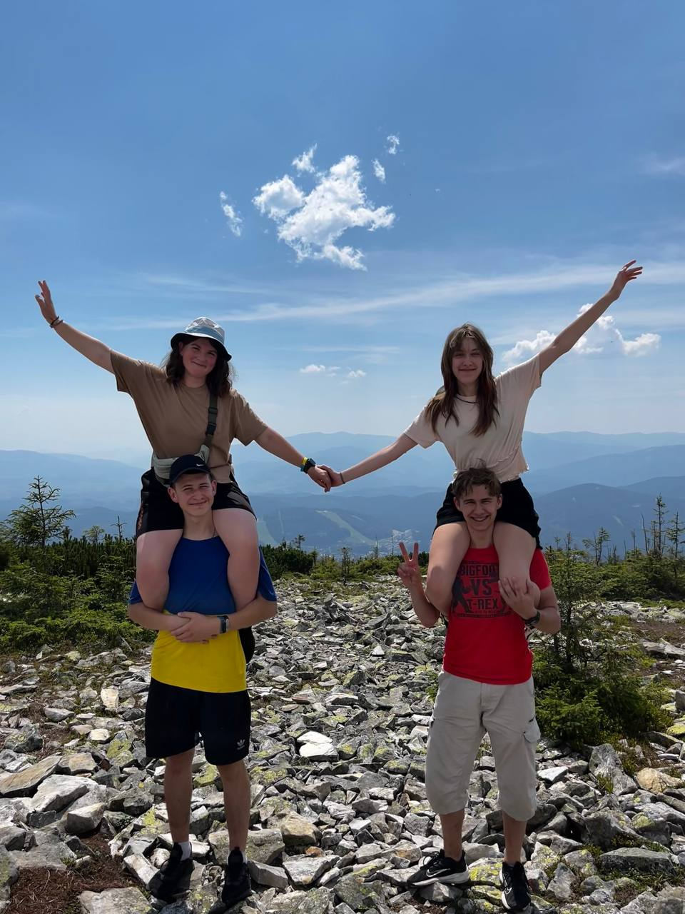

Історія
ActIS зародилася з групи друзів, які щиро закохані в гори. Ми часто ходили в походи Карпатами, насолоджуючись їхньою красою та величчю. З часом ми зрозуміли, що хочемо поділитися цією пристрастю з іншими людьми. Так виникла ActIS – фірма, яка організовує незабутні туристичні походи в західні гори України.
Наша мета
Ми прагнемо дати людям можливість досліджувати красу українських гір, відчути їхню силу та велич, а також отримати незабутні враження. Ми щиро віримо, що гори мають небачену оку цілющу силу, яка може змінити життя людини на краще.
Чому саме ми?
Ми завзята і відповідальна команда професіоналів із багаторічним досвідом походів у Карпатах. Відповідно до обраних послуг пропонуємо комфортні та безпечні маршрути для відвідувачів. Гарантуємо подарувати незабутні враження та поділитись цінним досвідом з підкорення багатьох гір цього регіону.
Плани на майбутнє
ActIS прагне стати лідером на ринку туристичних походів в Україні! Ми розширимо спектр послуг, запропонувавши екскурсії та програми для сімейного чи корпоративного відпочинку, а також відкрити онлайн магазин для спорядження.
Про Нас
Пропоновані послуги
Ми пропонуємо різноманітні походи для людей будь-якого рівня досвіду. Наші досвідчені гіди проведуть вас мальовничими маршрутами, поділяться цікавими історіями та забезпечать вашу безпеку.
Ці походи ідеально підходять для людей, які ніколи раніше не ходили в гори. Ми пропонуємо короткі та нескладні маршрути, які дозволять вам познайомитися з красою Карпат. Наші досвідчені гіди завжди поруч, щоб допомогти вам у будь-якій ситуації.
Ці походи ідеально підходять для людей, які ніколи раніше не ходили в гори. Ми пропонуємо короткі та нескладні маршрути, які дозволять вам познайомитися з красою Карпат. Наші досвідчені гіди завжди поруч, щоб допомогти вам у будь-якій ситуації.
Ці походи ідеально підходять для людей, які ніколи раніше не ходили в гори. Ми пропонуємо короткі та нескладні маршрути, які дозволять вам познайомитися з красою Карпат. Наші досвідчені гіди завжди поруч, щоб допомогти вам у будь-якій ситуації.